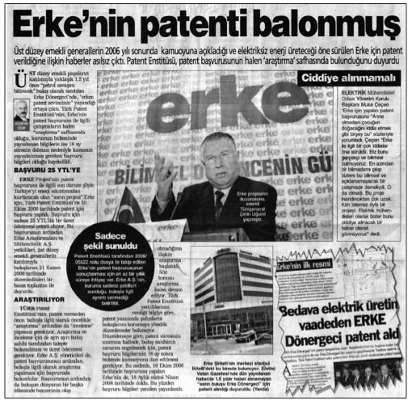

E
Ekonomik Suça, Ekonomik Ceza (ANAP iktidarının uygulamalarından biri): 1980 sonrası ANAP hükümetinin amaçlarından biri de kara para sahiplerinin ellerindeki dövizleri, ülke ekonomisine kazandırmaktı. Kara para sahiplerinin ellerinde kimilerine göre 40, kimilerine göre de 75 milyar dolar vardı. İddialara göre, Özal’ın iki yakın adamı Zürih’te kara para sahipleri ve döviz kaçakçılarıyla görüşmüştü. Kara para babalarının tek isteği, cezalarının bağışlanması ve ülkeye geri dönmekti. Hükümet, 1985’te 1567 sayılı Türk Parasının Kıymetini Koruma Yasa-sı’nı değiştirerek “Ekonomik Suça, Ekonomik Ceza”yı içeren bir düzenleme yaptı. Düzenlemeyle altın ve döviz kaçakçılarına verilen ağır hapis cezaları 100 bin liralık para cezasına dönüştürüldü. Yurtdışındaki kara para babaları teker teker Türkiye’ye döndü. Bu kişiler yurda dönmeden önce, bir iyi niyet gösterisi olarak, miktarı bilinmemekle birlikte yüklü bir miktar dövizi de resmî kanalla ülkeye sokmuşlardı.
Ekonominin Tabularını Yıkmak: (Bkz. Çağ Atlayan Türkiye).
Ekonominin Türkleştirilmesi: (Bkz. 6-7 Eylül Olayları).
En Zengin 100 Türk (Türkiye Zenginler Ligi):
Türk medyasında “En Zengin 100 Türk” araştırmasını, ilk kez Nokta dergisi 1987’de yayımladı. Araştırmanın altında Nurcan Akad ve Ahmet Turhan Altıner’in imzaları bulunuyordu. Derginin yaptığı araştırmaya göre, o yıl serveti 1 trilyon lirayı aşan iki imparator vardı. İlk araştırmanın üzerinden geçen 20 yılda Türkiye’de çok büyük değişimler yaşandı. Ancak Koç Ailesi, 20 yıl sonra da Türkiye’nin en zenginleri sıralamasındaki birinciliğini kimseye kaptırmadı.
Erdoğan Üslubu (Siyaset adamı Recep Tayyip Erdoğan’a ait sözler bütünü): Başbakan Erdoğan sözleriyle birçok kez siyasal ve ekonomik tartışmaların içinde yer aldı. Yaptığı değerlendirmeleri ve açıklamalarıyla belli ki uzun süre hafızalarda yer edecek sözleri Türk toplumuna miras bıraktı, “Ben ülkemi âdeta pazarlamakla mükellefim” sözü Erdoğan’ın en önemli sözlerinden biridir. 2005’te Galataport ihalesiyle ilgili eleştirilere sert tepki gösteren Başbakan Recep Tayyip Erdoğan’ın “Ülkemi pazarlamakla mükellefim” sözleri uzunca bir süre Türkiye siyasetine damgasını vurdu. Erdoğan bu sözleri, İstanbul Şişli’deki Cevahir Alışveriş ve Eğlence Merkezi’nin açılışında, uluslararası yatırımcılarla yaptığı görüşmelere ilişkin kendisine getirilen eleştirileri yanıtlarken söylemişti:
“Ülkede yatırım yapılmasını teminen dünyanın bütün girişimcileri ile her yerde görüşürüm. Bakan arkadaşlarıma her yerde görüşmelerini tavsiye ediyorum, ‘görüşün’ diyorum. Çünkü ben ülkemi âdeta pazarlamakla mükellefim. Bunu her ülkenin başbakanı yapıyor, devlet başkanı yapıyor. Bugüne kadar benim başbakanlarım yapmamışsa bu ileri bir anlayış değildir. Kusura bakmayın. Sayın Bush’tan tutun Almanya’nın, Fransa’nın, bütün Avrupa ülkelerinin başbakanları da bunu yapıyor. Bizzat davet ediyor, uçak gönderiyor, oturuyor, konuşuyor. Ama bunların dünyadan haberi yok, ne oluyor ne bitiyor, haberi yok.”
Bu sözleri sarf etmesiyle muhalefetten gelen ciddi eleştiri üzerine Erdoğan, sözlerine sahip çıkarak şöyle bir savunma yaptı: “Pazarlama ifadesini inanarak ve bilime dayanarak kullandım. Ama bunların kitabında böyle bir şey yok, çünkü niyetleri bozuk. ‘Pazarlama’ dediğin zaman, akıllarına başka şeyler geliyor.”
Siyasete “Kasımpaşalı” üslubunu yerleştiren Erdoğan’ın tavır ve sözlerinden toplumun birçok kesimi nasibini aldı. İlk akla gelenlerden biri de Mersinli çiftçiydi. 2006’da Erdoğan, Mersin’de “Anamı ağlattınız” diye bağırarak kendisini protesto eden çiftçiyi “Lan terbiyesizlik yapma” diyerek azarladı. Tartışmanın uzaması üzerine de Erdoğan, çiftçiye “Ananı da al da git” demesi üzerine, toplumun farklı kesimlerinden farklı eleştiriler aldı.
2008’de başlayan dünya ekonomik krizi konusunda hükümet uzunca bir süre, krizin Türkiye’ye hiçbir şekilde etkisinin olmadığı konusunda netti. Fakat kapanan fabrikalar ve işten atılan insanlar nedeniyle bu değerlendirmesinde daha fazla direnmedi ve Erdoğan, “Kriz teğet geçti” değerlendirmesi yaptı. Bu kitabın yayına hazırlandığı sıralarda Erdoğan, yine kriz konusunda konuştu. Krizin “teğet geçeceği” yönündeki ısrarını sürdüren Erdoğan, “Kriz yüzünden iş yerleri kapanıyor” sözlerini abartılı bularak, bu konuda “İşi bilmeyenler kapatmış olabilir” yorumunu yaptı.
Erdoğan’ın eleştirilerinden çevreciler de nasibini aldı. Çevrecilere, “Ben çevrecilerin daniskasıyım” diyerek yanıt verirken, “1 Mayıs İşçi Bayramı” tartışmalarında da “Nerede görülmüş, ayakların baş olduğu” sözüyle bir hayli dikkat çekti.
Erke Dönergeci (Başarılı olsaydı, savaşları durduracak, Türkiye’ye “çağ atlatacak”tı): Millet olarak abartmayı çok severiz. “Asrın Buluşu” olarak lanse edilen Erke Dönergeci vakası da bunlardan biridir. Erke Araştırmaları ve Mühendislik’in 2006’da emekli general ve bürokratların da desteğini alarak düzenlediği bir basın toplantısında Erke Dönergeci devridaim makinesini “çağın buluşu” olarak ilan etti. Erke Dönergeci, bunu “Çevreye zarar vermeyen, istenilen güç ve sürati sağlayabilen, doğrudan hareketin elde edilebildiği, yakıt gerektirmeyen bir kuvvet makinesi” olarak tanımlanıyordu. Bilimsel ve teknik herhangi bir açıklama yapılmazken üretici firma, makinenin eylemsizlik özelliğinden faydalandığını, buluşun istenen yerde, istenen miktarda sınırsız elektrik üretme imkânı sağladığını belirtiyordu. Buluşun küresel ısınmayı durduracağı ve savaşları bitireceği iddia edilirken, yetkililer “güvenlik sebebiyle” ayrıntılı teknik açıklama yapmayı reddediyordu. Erke’nin bilimsel araştırmalar yapan ticari bir kuruluş olduğunun altı çizilerek, yurtiçi ve yurtdışındaki hiçbir siyasi parti, siyasi oluşum, siyasi hareket, dernek, vakıf, cemaat, tarikat, finansal kuruluş vb. ile ilgisi bulunmadığı ve 2007’de makinenin seri üretimine geçileceği belirtildi. “Yakıt gerektirmeyen elektrik üretici, 2007’de halkımızın kullanımına sunulacaktır” denilirken bilim adamları, buluşu pek gerçekçi bulmadı. Bu tür bir makinenin, “enerjinin sakımı kanunu” gereği mümkün olmadığını ileri sürdüler. 2007 yılının sonuna gelindiğinde Erke’den ses seda çıkmazken Erke buluşunun da “Con Ahmet’in makinesi”yle aynı sonucu paylaşmasından korkulmaktaydı. (Bkz. Con Ahmet’in Devridaim Makinesi)

Millet olarak abartmayı çok severiz. “Asrın Buluşu” olarak lanse edilen Erke Dönergeci vakası da bunlardan biridir. Başarılı olsaydı, Türkiye’ye “çağ atlatacak”tı.
Ey Türk Zengin Ol! (Ticaretin azınlıkların elinden alınarak Müslüman tüccarlara verilmesi üzerine kurgulanan görüş): Tarihsel gelişimi içindeki anlamıyla Batı’daki gibi bir toplum yapısı, Osmanlı Devleti’nde 18. yüzyılın ikinci yarısına kadar henüz oluşmamıştı. Bu nedenle de belli bir sınıfın iktisadi olarak palazlanıp ortaya çıkması ve ideolojik bir mücadele vermesi pek mümkün görünmüyordu. İttihat ve Terakki liderleri, kendileri burjuva olmadıkları hâlde Türk burjuvazisi yaratmaya yönelik sosyal ve ekonomik programları uygulamaya karar verdi. Öncelikle sermayeye güvence sağlanmalı ve Osmanlı Devleti liberalizmi benimsenmeliydi. Onlara göre, Osmanlı-Türk topluluğunun çağdaş bir devlete dönüşmesi için Türk burjuvazisinin doğması gerekiyordu. Ulusal burjuvazinin her şeyden önce yeterli bir sermaye birikimine ihtiyacı vardı.
“Ey Türk Zengin Ol!” (İkdam gazetesinin çağrısı, 29 Kanun-u evvel 1916) şiarından hareket eden İttihat ve Terakki yönetiminin iktisat politikası, ticaretin azınlıkların elinden alınarak Müslüman tüccarlara verilmesi üzerine kurgulanmıştı. Fransız, Rum ve Ermeni bankacı, tüccar ve sanayici gibi, Türk bankacı, tüccar ve sanayici de olmalıydı. İttihat ve Terakki liderleri, toplumsal değişimi ve dönüşümü gerçekleştirmek ve gayrimüslimlerin yerlerine Müslümanları yerleştirmek amacıyla, Müslüman-Türk zengin sınıfı yaratmaya girişti. “Millî İktisat” politikası gereği, devletin olanakları belli kişi ve tabakalar için seferber edildi. İttihat ve Terakki hükümeti, savaşı ulusal işadamı yaratmak ve ulusal iktisadı kurmak için bir fırsat olarak görüyordu. Savaş yıllarında, Anadolu’dan İstanbul’a hububat sevki en kârlı faaliyet olarak ortaya çıktı. Savaş sevki-yatına ayrılan demiryolu şebekesinden buğday nakli için vagon tahsisi elde edebilen tüccar, İstanbul’a getirdiği gıda maddelerini spekülatif kârlarla pazarlama imkânı buluyordu. Savaş süresince gerek devlet eliyle, gerekse kıtlığın yol açtığı karaborsa yoluyla bazı kesimlere ve partinin yandaşlarına büyük servetler kazandırılırken; karaborsa ve spekülatif kazançlara göz yumarak da bilinçli bir şekilde Müslüman-Türk zenginlerin oluşmasına çalışılıyordu. İngiliz ve Fransız kapitalizminin aracısı olmaları nedeniyle Rum ve Ermeni tüccarların tasfiyesine yönelik politika, Anadolu’da ekonomik nüfuzunu artırma çabasındaki Almanya tarafından da destekleniyordu. “Gelişmeye başlamış Türk burjuvazisinin öncü kolu” olarak tanımlanan İT üyelerinin yaptıkları aslında, “devlet eliyle” değil, “parti eliyle” millî bir tüccar sınıfı yaratma politikasıydı. 19081918 yılları arasında faaliyete geçen bankaların hissedarları arasında, çok sayıda İttihat ve Terakki üyesinin yanı sıra büyük toprak sahipleri ve tüccarlar da yer aldı. Bu yıllarda Müslüman-Türk nüfusun şirketleşme oranı da gözle görülür bir şekilde arttı.